|
|
| sponges text index | photo index |
| Phylum Porifera |
| Silvery blue
sponge Lamellodysidea herbacea* Family Dysideidae updated Oct 2016 Where seen? This pale blue prickly sponge is commonly seen on our Southern shores, growing over coral rubble. Features: Small, covering an area of 10-15cm. The sponge can take various forms; flat spatula-like fingers, lettuce-like 'leaves', spindly branches, short thicker lobes, all emerging from an encrusting base. Younger ones may look like cabbages with upright lobes arranged in a maze-like pattern. Surface texture prickly. A few small holes at the top edges. Colours from a pale greyish blue to greenish due to the cyanobacteria that inhabit the sponge. Cyanobacteria contain a bluish pigment phycocyanin that is used to capture light for photosynthesis. They also contain chlorophyll. |
|
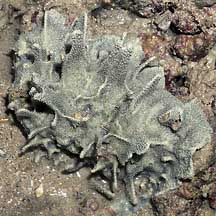 Labrador, Mar 05 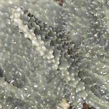 Labrador, Mar 05 |
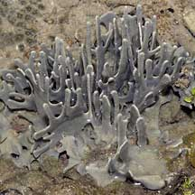 Labrador, Apr 05 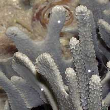 Labrador, Apr 05 |
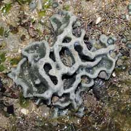 Cyrene Reef, Apr 08 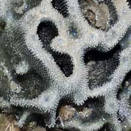 |
|
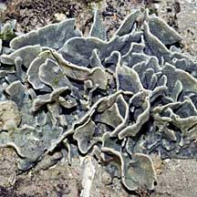 Sentosa, Apr 07 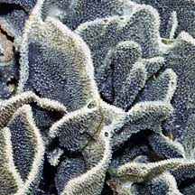 A young sponge may look like a cabbage. |
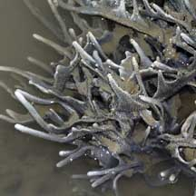 Kusu Island, Jun 04 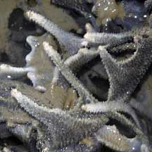 |
*Species are difficult to positively identify without close examination.
On this website, they are grouped by external features for convenience of display.
| Silvery blue sponges on Singapore shores |
On wildsingapore
flickr
|
| Other sightings on Singapore shores |
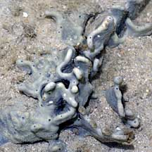 Pulau Pawai, Dec 09 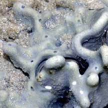 |
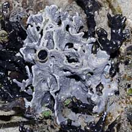 Pulau Senang, Jun 10 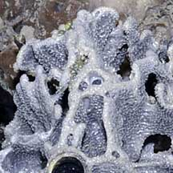 |
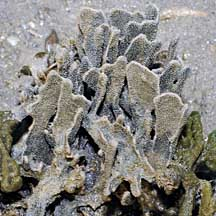 Terumbu Berkas, May 10 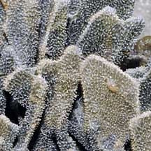 |
|
Links
References
|